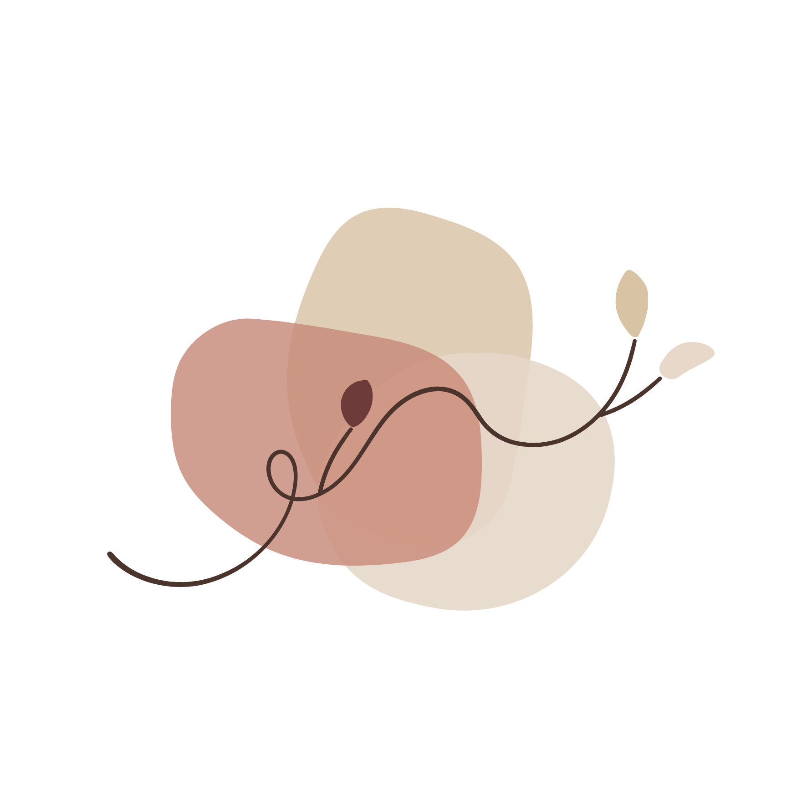
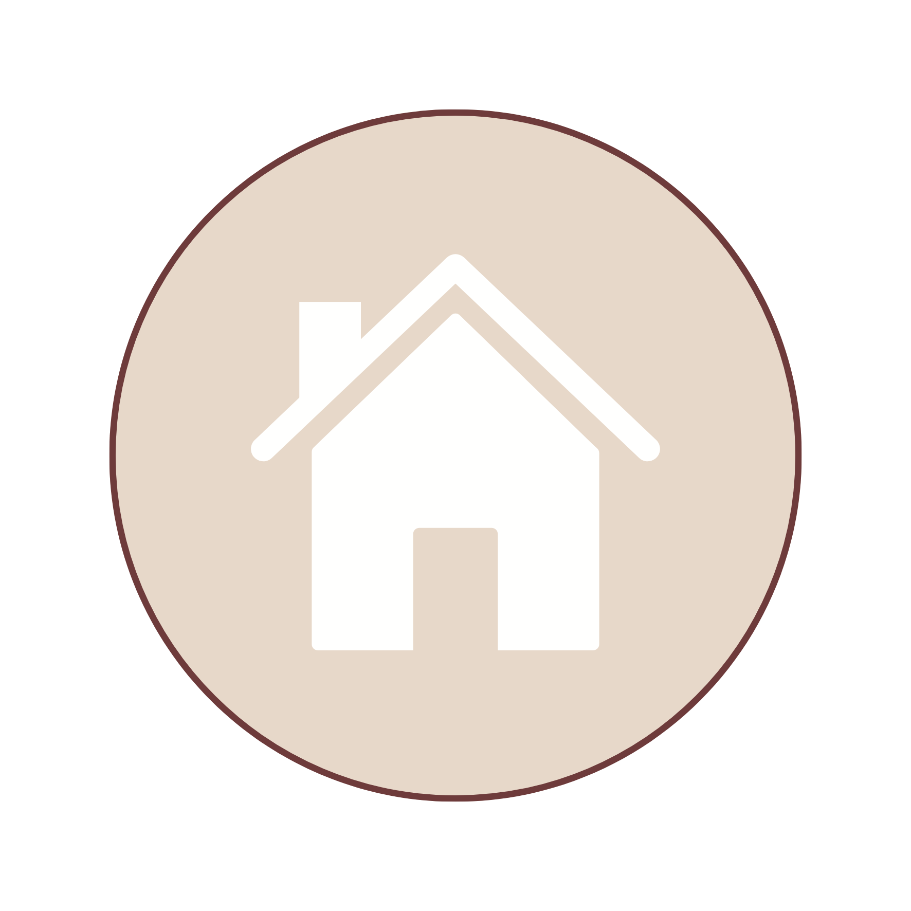

Psicóloga Clínica · CRP 04/72523
Psicoterapia de orientação psicanalítica, com uma escuta atenta à história, às relações e à singularidade de cada pessoa.
Atendimento presencial em Belo Horizonte e online.
Informações sobre atendimentoQuem sou eu
Yara Maria de Campos, psicóloga clínica, atuo com base na clínica psicanalítica. Minha trajetória profissional reúne experiências em saúde mental, educação e organizações. Sou especialista em Gestão Escolar e atuo também na formação de grupos, no ensino e no desenvolvimento de projetos.
Na clínica, meu trabalho é orientado pela escuta, pelo compromisso ético e pelo respeito à singularidade de cada sujeito.
O que é
A psicoterapia é um processo de acompanhamento psicológico realizado por meio de encontros regulares, geralmente semanais. Na abordagem psicanalítica, a fala e a escuta são fundamentais para compreender experiências, sentimentos, conflitos e relações, incluindo questões que nem sempre conseguimos reconhecer ou compreender com facilidade.
Cada processo acontece de maneira singular, respeitando a história, as necessidades e o tempo de cada pessoa.
Como funciona

Atendimento para crianças, adolescentes, jovens e adultos. Consultório no bairro Coração Eucarístico, em Belo Horizonte (MG).
Atendimento por videochamada para adolescentes, jovens e adultos, no Brasil e no exterior, através da plataforma Google Meet, observadas as condições técnicas, éticas e legais aplicáveis.
Tire suas dúvidas
Você pode entrar em contato pelo WhatsApp para receber informações sobre o atendimento e esclarecer dúvidas iniciais. Além disso, a primeira sessão é um momento para conversarmos sobre o que motivou sua procura, suas expectativas e o funcionamento do processo psicoterapêutico. Não é necessário chegar com tudo organizado ou saber exatamente o que dizer.
O agendamento é realizado pelo WhatsApp. Por lá, podemos conversar sobre a modalidade de atendimento, os horários disponíveis e as informações necessárias para o início do acompanhamento.
Há possibilidade de organizar o pagamento dos honorários de forma semanal ou mensal. As condições são combinadas previamente, de acordo com a organização dos atendimentos.
Sim, porém os atendimentos infantis acontecem exclusivamente na modalidade presencial. Para as demais faixas etárias, há possibilidade de atendimento presencial ou online.
As sessões acontecem por videochamada, através da plataforma Google Meet, em horário previamente agendado. É importante que o paciente esteja em um ambiente reservado, com privacidade e condições adequadas para a conversa. Em caso de perda de conexão, a sessão é remarcada.
Não existe um prazo único para o processo psicoterapêutico. Sua duração considera as questões apresentadas, o desenvolvimento do acompanhamento e as necessidades de cada paciente.
Sim. O sigilo profissional é um princípio fundamental da prática psicológica. As informações compartilhadas durante o acompanhamento são protegidas conforme o Código de Ética Profissional, observadas as situações excepcionais previstas nas normas aplicáveis.
O acompanhamento considera as particularidades de cada faixa etária. No caso de crianças e adolescentes, a participação dos responsáveis é organizada conforme as necessidades do atendimento, respeitando os direitos e a privacidade do paciente.
Informações e agendamentos
Para saber mais sobre os atendimentos, consultar horários ou agendar uma sessão, entre em contato.
Conversar pelo WhatsApp